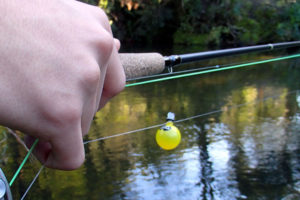
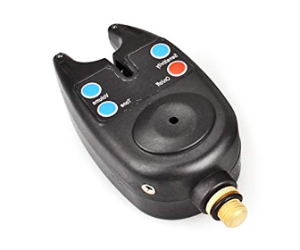

Es de vital importancia detectar picadas de peces a tiempo. Si no lo hacemos en el momento indicado podemos perder la captura y el tiempo que hemos invertido en ella habrá sido en vano. Detectar una picada sin utilizar ningún elemento es bastante complicado, pues la vista se cansa y, tras un periodo de tiempo, empezamos a dudar.
Ni qué decir tiene que no se trata de algo imposible, ¡claro está! Pero tampoco puede negar nadie que en las últimas horas de una jornada se nos van más piezas de las que capturamos.
Para evitar ese pequeño inconveniente podemos ayudarnos con algunos otros elementos y recursos como, por ejemplo, colocar un trozo de lana de un color vivo en el propio sedal, de manera que cuando veamos que cambia de altura detectemos que un pez ha picado. También se puede marcar el sedal en una altura determinada para controlar su movimiento. Son soluciones sencillas, caseras y económicas pero que siguen haciéndonos forzar la vista.
Otro método avisador de picadas no sonoro es el de ponerle «ojos» a la boya, de manera que cuando se hunda porque el pez se quiere llevar la carnada, el pescador sepa que algo ha ocurrido. Pero esto, al igual que los métodos anteriores, hace que el pescador tenga que estar fijando su atención en puntos en concreto. Aun así, es más fácil de identificar y tampoco requiere de un enorme desembolso económico.
En cualquier caso, estas soluciones, aunque sencillas, vemos que requieren de mucha atención y de un sobreesfuerzo de nuestra vista. Es este el motivo por el que existe el dispositivo avisador de picadas. Este será el que nos va a indicar que se ha producido una picada, de manera que el propio pescador debe ser rápido y tener una buena capacidad de reacción para no perder la presa pero, con todo y con eso, no estamos deteriorando nuestra visión. De ahí, que este tipo de dispositivo sea imprescindible para los pescadores expertos que pasan bastante tiempo esperando las capturas. El uso de un detector de picadas es muy sencillo. A continuación, vamos a explicar cómo funciona y cómo puedes disfrutar de todas sus ventajas, pues actualmente se le dan dos usos diferentes.
Utilizar estos indicadores para detectar una picada es interesante, aunque su precisión es bastante limitada. Son señalizadores bastante voluminosos y su lance es bastante complicado para el pescador, ya que se suelen fallar algunas picadas. Están fabricados con masilla, foam y yarn. Se suelen utilizar en el caso de que los señuelos sean pesados, ya que el tamaño de estos indicadores se adapta al peso de los mismos. Dentro de esta clasificación se encuentran los muelles que sirven para indicar que un sedal está enrollado. Estos, por contra, no sirven para señuelos demasiado pesados y, además, deben ser engrasados frecuentemente. Pero tienen la particularidad de que son más precisos y, por ello, más interesantes de utilizar. Sin apoyar el indicador encima del agu